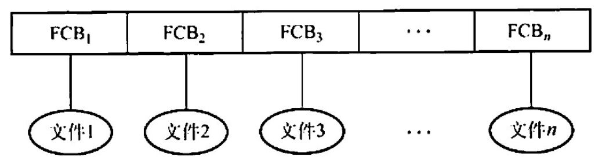
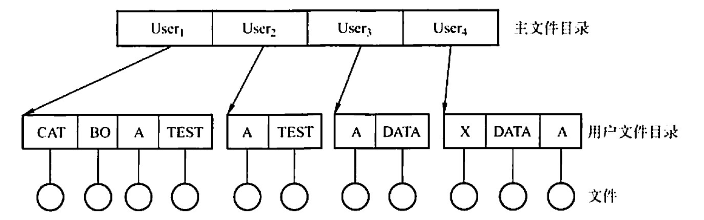
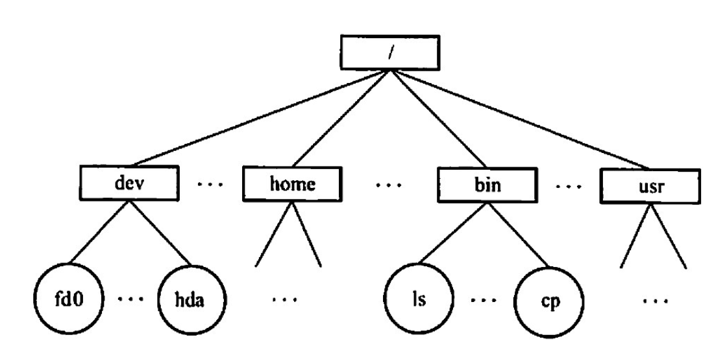
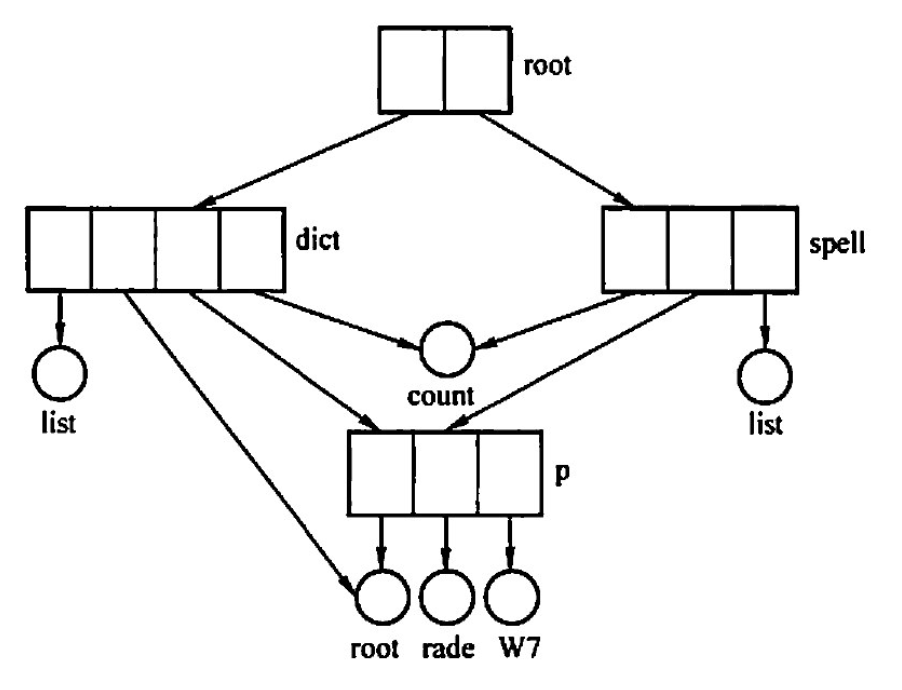
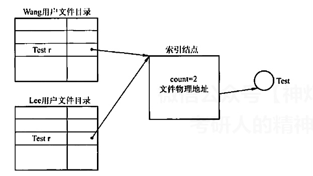

2022.09.21
单目录结构

两级目录结构

树型目录结构

无环图目录结构

基于索引结点的共享方式（硬链接）

利用符号链实现文件共享（软链接）
系统创建LINK类型文件。也可以用于网络共享中。软链接速度比硬链接慢。
一个文件系统中，其FCB 占64B，一个盘块大小为 1KB，采用一级目录。假定文件目录中有3200个目录项。则查找一个文件平均需要（）次访问磁盘。 A. 50 B. 54 C. 100 D. 200
【答案】：1600/2^{4}=100，C
下列关于目录检索的论述中，正确的是（）。 A. 由于散列法具有较快的检索速度，因此现代操作系统中都用它来替代传统的顺序检索方法 B. 在利用顺序检索法时，对树形目录应采用文件的路径名，且应从根目录开始逐级检索 C. 在利用顺序检索法时，只要路径名的一个分量名未找到，就应停止查找 D. 利用顺序检索法查找完成后，即可得到文件的物理地址
【答案】：C
一个文件的相对路径名是从（ ）开始，逐步沿着各级子目录追溯，最后到指定文件的整个通路上所有子目录名组成的一个字符串 A. 当前目录 B. 根目录 C. 多级目录 D. 二级目录
【答案】：A
文件系统来用各级目录结构的目的是( ） A. 减少系统开销 B. 节省存储空间 C. 解决命名冲突 D. 缩短传送时间
【答案】：C
若文件系统中有两个文件重名，则不应来用（ )。 A.单级目录结构 B.两级目录结构 C.树形目录结构 D.名级目录丝构
【答案】：A
下西的说法中，错误的是（）。 I.一个文件在同一系统中、不同的存储介质上的复制文件，应来用同一种物理结构 II.对一个文件的访问，常由用户访问权限和用户优先级共同限制 III.文件系统采用树形目录结构后，对于不同用户的文件，其文件名应该不同 IV.为防止系统故障造成系统内文件受损，常采用存取控制矩阵方法保护文件 A. II B. I、III C. I、III、IV D. 全选
【答案】：B->D。II：对一个文件的访问，常由用户访问权限和文件属性共同限制。为防止系统故障造成系统内文件受损，采用备份。多用户权限采用存取控制矩阵方法保护文件。
【2010统考真题】设当前工作目录的主要目的是（）。 A. 节省外存空问 B. 节省内存空间 C. 加快文件的检索速度 D. 加快文件的读/写速废
【答案】：C
【2009 统考真题】设文件F1的当前引用计数值为 1，先建立文件 F1的符号链接（软链按）文件 F2，再建立文件F1的硬链接文件F3，然后州除文件F1。此时，文件F2和文件F3的引用计数值分別是（）。 A. 0.1 B. 1.1 c. 1.2 D. 2.1
【答案】：A -> B。建立符号链接时，计数值直接复制
【2017统考真题】若文件f1的硬链接为 f2，两个进程分别打开f1和12，获得对应的文件描述符为f1和f2，则下列叙述中正确的是（) I. f1和12的读写指针位置保持相同 II. f1和12共享同一个内存索引结点 III. fd1 和fa2分别指向各自的用户打开文件表中的一项 A. 仅III B. 仅II、III C. 仅I、II D. I、II和III
【答案】：D -> B
【2020 统考真题】若多个进程共享同一个文件F，则下列叙述中，正确的是（ ）。 A.各进程只能用“读”方式打开文件下 B.在系统打开文件表中仅有一个表项包含F的属性 C.各进程的用户打开文件表中关于F的表项内容相同 D.进程关闭F时，系统删除F 在系统打开文件表中的表项
【答案】：B
【2021 统考真题】若目录dir下有文件file1，则为删除该文件内校不必完成的工作是（） A. 删除 file1 的快捷方式 B.释放file1 的文件控制块 C.释放file1 占用的磁盘空间 D.删除目录dir 中与file1对应的目录项
【答案】：A